01 / REPRESENT
Build a multiscale hierarchy
Interleave spatial sampling and amplitude quantization for range images. Refine intensity amplitude on the spatial grid established by decoded range.
An efficient neural codec for LiDAR range and intensity sequences.
† Equal contribution · * Corresponding author
vs. G-PCC octree on WOD & SemanticKITTI
Bitrate for detection & segmentation
Range + intensity · Jetson Thor → RTX 5070
01SLICE in the field
Indoor and outdoor recordings from the deployed system. Switch between the available scenes and transmission rates.
This recording could not be loaded. Use “Open recording” below to view the original MP4.
Indoor · 400 kbps
Ouster OS1 measurements, encoded on the edge and reconstructed on the receiver.
02The idea
Autonomous platforms need to keep up with the sensor while managing limited storage and communication bandwidth. SLICE addresses both needs with embedded lossy-to-lossless coding.
LiDAR compression for autonomous platforms must support storage-efficient onboard caching and bandwidth-efficient scene transmission without falling behind sensor acquisition. We present SLICE, a scalable neural codec for range and intensity sequences that supports both applications through embedded lossy-to-lossless coding. A reversible multiscale representation interleaves spatial and amplitude decompositions for range images, while intensity is progressively refined on the decoded range grid. Cross-scale conditional models exploit lower-scale reconstructions and temporal references for both modalities, with additional range guidance for intensity. Each modality-specific model supports multiple bitrates and both intra- and inter-frame coding, while one-step restoration enables efficient reconstruction from truncated bitstreams. On WOD and SemanticKITTI, SLICE reduces lossless geometry bitrate by 63.01–76.20% relative to G-PCC octree coding, substantially lowering the storage required for exact recovery of the coded measurements. At approximately 3 bits per point for range coding, it also preserves near-uncompressed detection and segmentation accuracy. A quantized implementation sustains lossless range-and-intensity streaming at 10 FPS in a ROS2 pipeline from a Jetson Thor encoder to an RTX 5070 laptop decoder. These results demonstrate a practical codec for compact onboard recording and scalable remote reconstruction of LiDAR scenes.
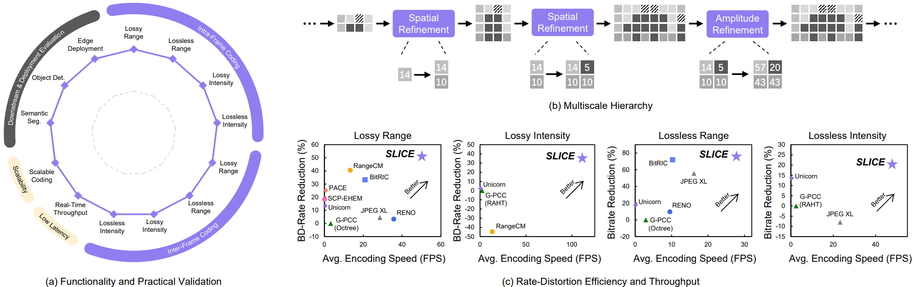
03How it works
SLICE codes refinements between reversible scales. Each modality has its own model, shared across bitrates and intra- / inter-frame modes.
* Most LiDAR sensors natively represent range measurements as unsigned integers; lossless coding here refers to the exact reconstruction of these integer values.
01 / REPRESENT
Interleave spatial sampling and amplitude quantization for range images. Refine intensity amplitude on the spatial grid established by decoded range.
02 / CONDITION
Use decoded lower-scale information and, for inter-frame coding, the previous frame’s same-scale context. Decoded range also guides intensity coding.
03 / RECONSTRUCT
One-step restoration predicts missing amplitude detail after truncation. Decoding every refinement bypasses restoration and recovers the coded measurements exactly.
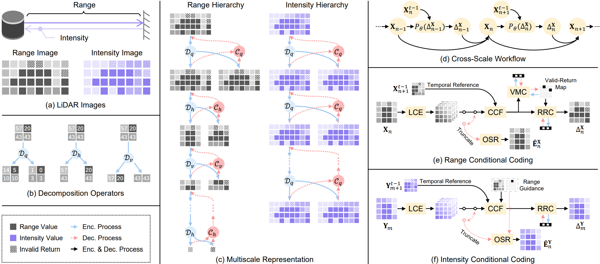
Range and intensity branches are trained independently. Changing the operating bitrate or frame mode does not require a separate model for that modality.
Horizontal refinements improve geometry; vertical refinements improve intensity at the selected geometry level. Truncated reconstructions retain the spatial resolution of the decoded range scale.
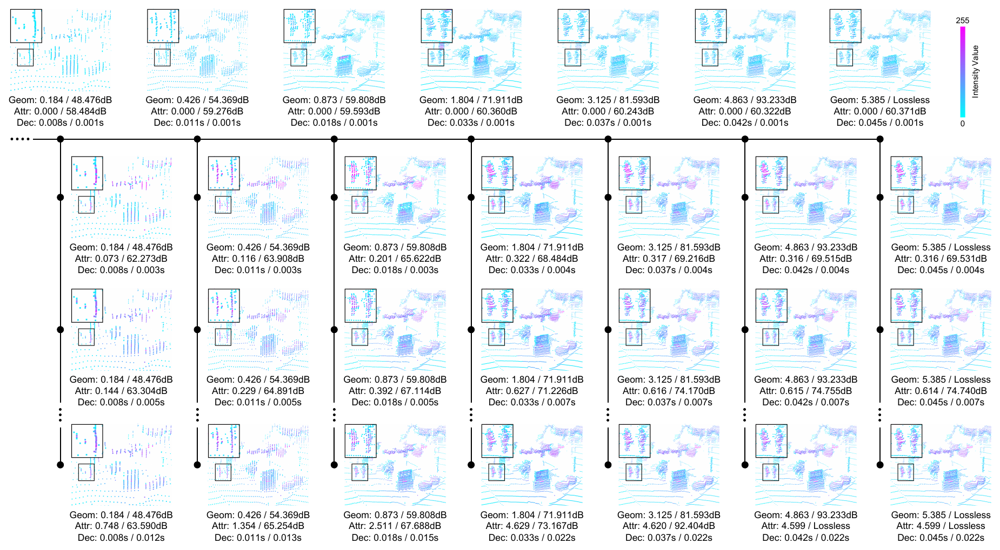
04Experimental results
Evaluated on the Waymo Open Dataset (WOD) and SemanticKITTI, from signal fidelity to 3D detection and semantic segmentation.
Native 64 × 2,650 first-return range and intensity images. Range is capped at 75 m and quantized to 1 mm; intensity is clipped to [0, 1] and mapped to 8-bit values.
Spherical projection produces 64 × 2,048 pseudo images. Range is capped at 82 m at 1 mm precision; intensity is bounded to [0, 99]. Sequence 08 is reserved for validation.
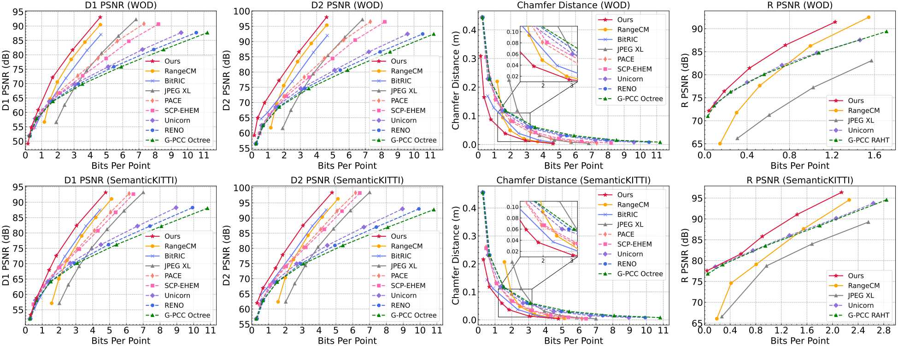
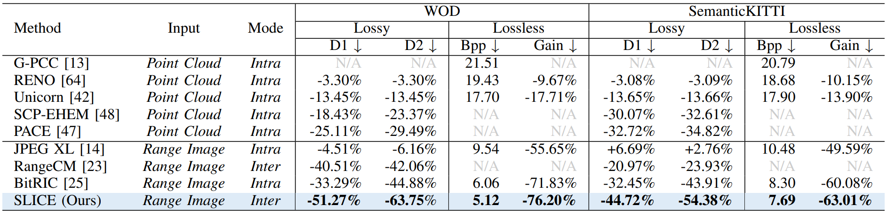
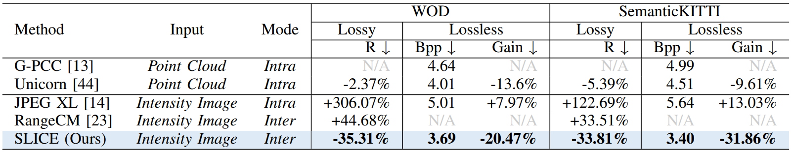
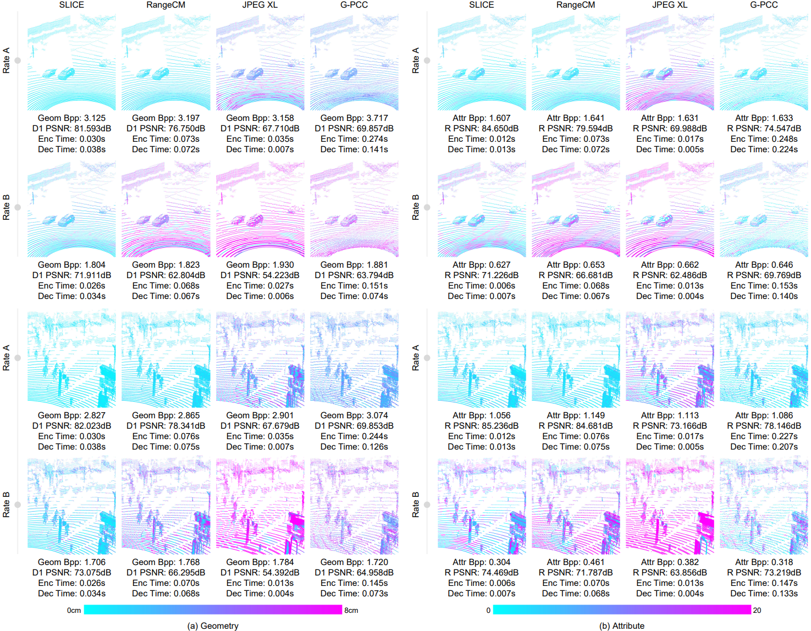
CenterPoint detection on WOD and SparseUNet segmentation on SemanticKITTI evaluate the reconstructed point clouds. Perception models are trained on uncompressed inputs and frozen during testing.
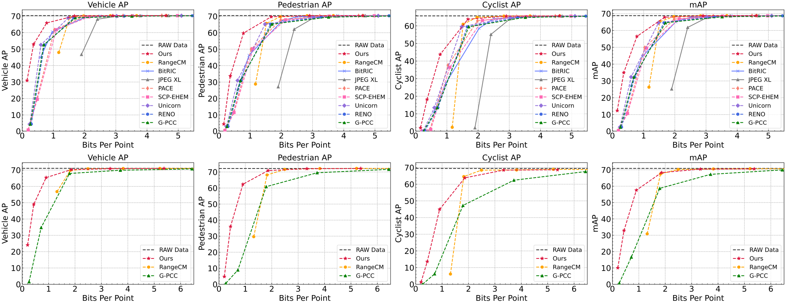
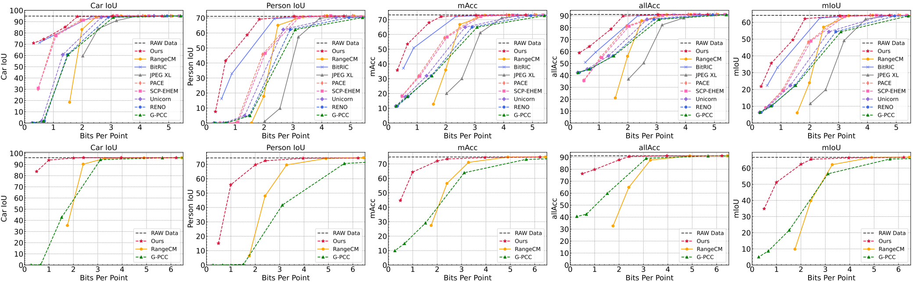
Desktop benchmark on an AMD Ryzen 9950X3D and a single RTX 5080. Lossy timings are averaged across evaluated bitrates.
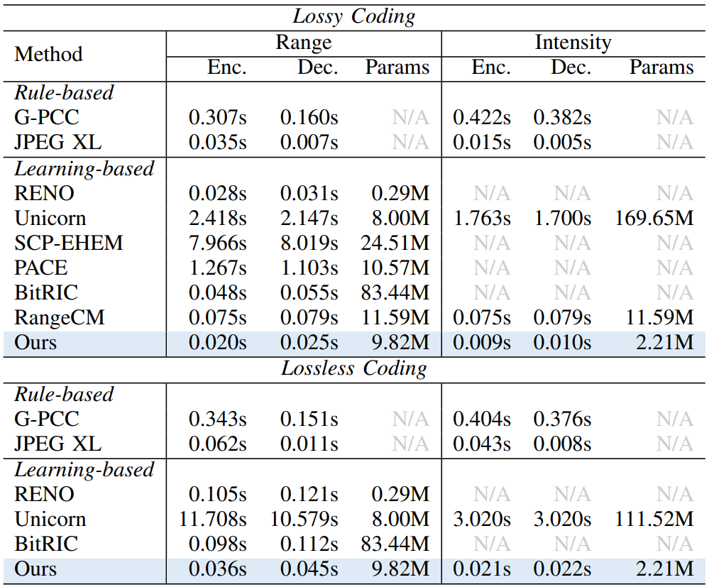
05Real-world deployment
SLICE-Q, the quantized implementation, runs in a ROS2 pipeline between a Jetson Thor edge encoder and an RTX 5070 laptop decoder.
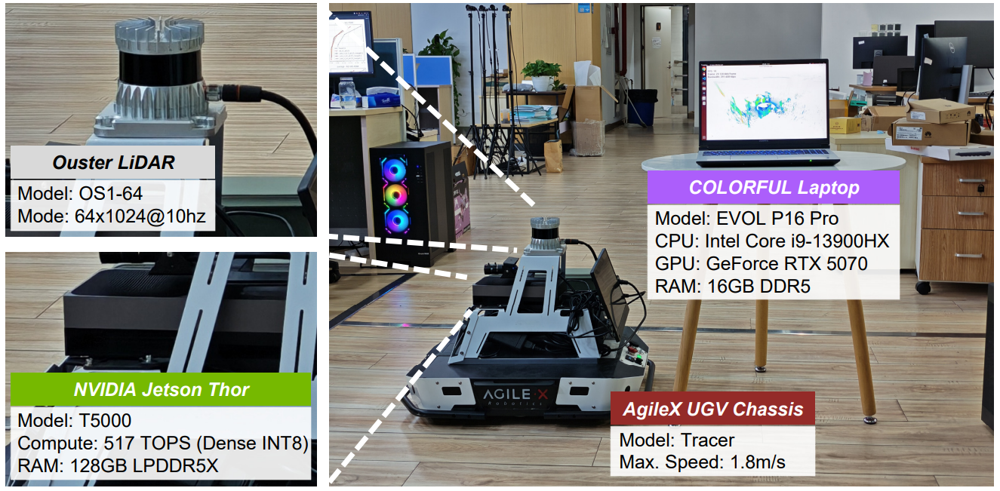
The dual-lossless endpoint supports 10 FPS streaming, matching the configured OS1 acquisition rate.
These are combined range-and-intensity coding times on each device; they do not include network transport latency.
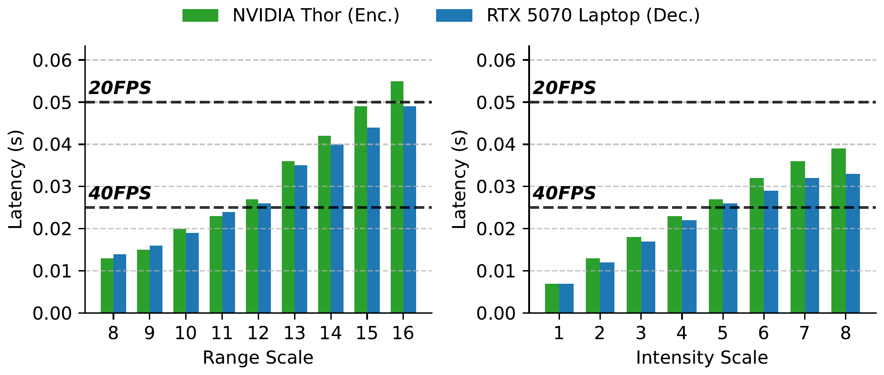
On the OS1 scan shown below, SLICE retains ground contours and local object shapes at 290 kbps, compared with JPEG XL at 311 kbps and G-PCC at 307 kbps.
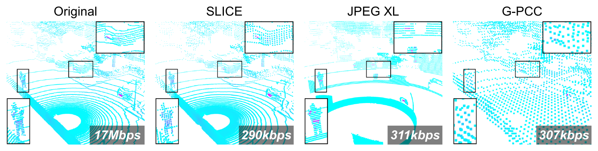
06People behind SLICE
Kang You†youkang@smail.nju.edu.cn
Jiahao Zhu†zhujiahao@smail.nju.edu.cn
Tong Chenchentong@nju.edu.cn
Zhan Ma*mazhan@nju.edu.cn
Dandan DingDandanDing@hznu.edu.cn
M. Salman Asifsasif@ucr.edu
† Equal contribution. · * Corresponding author.